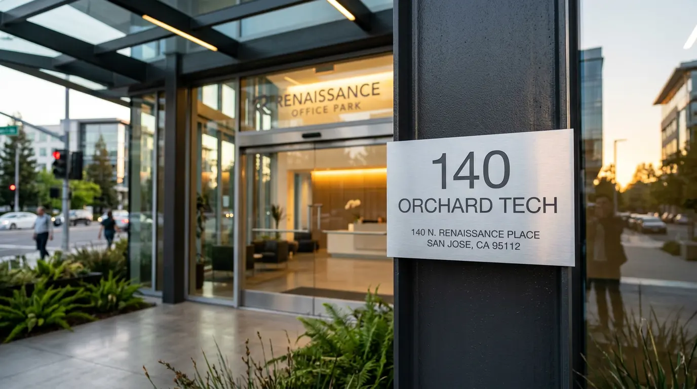
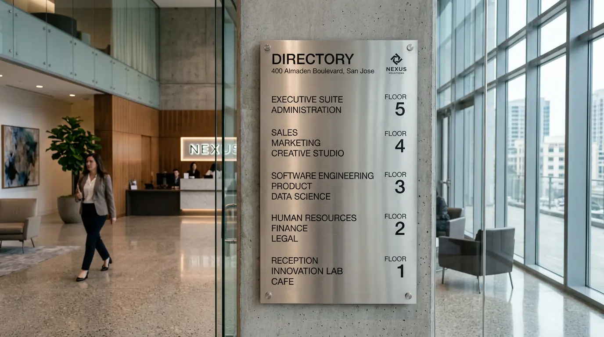
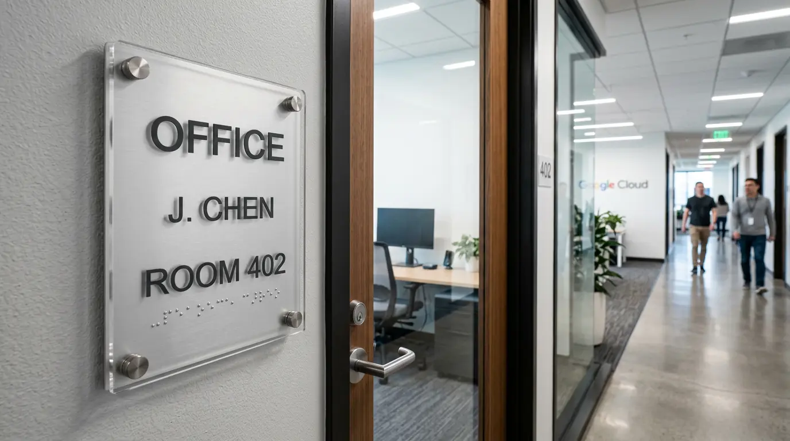
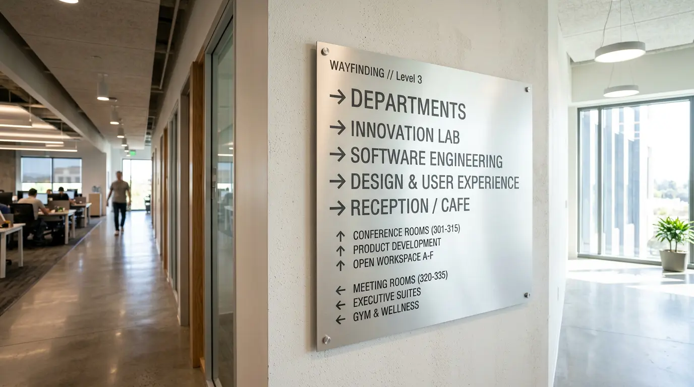
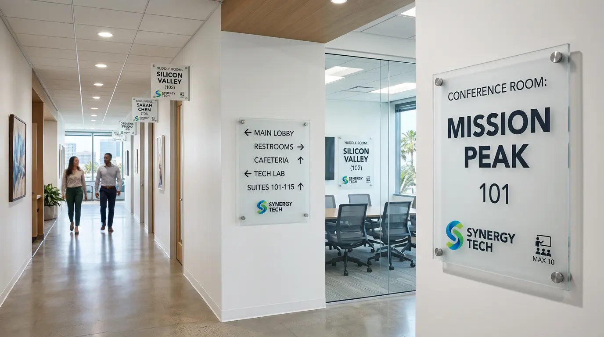
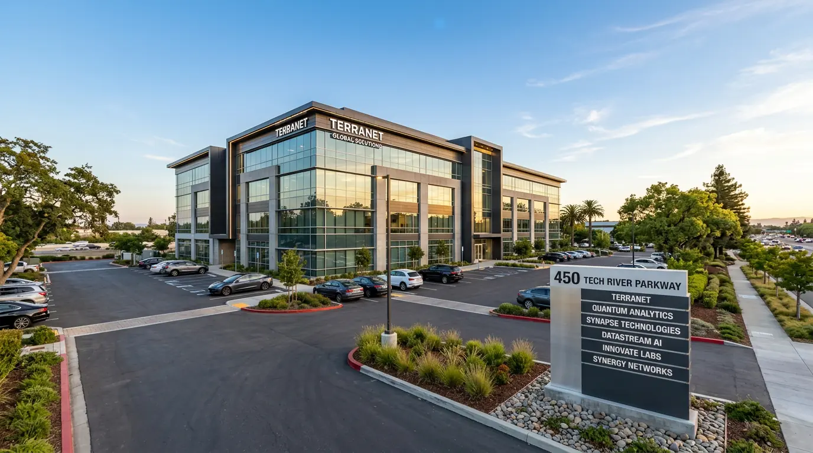

Suite numbers, room ID plaques, interior directories, conference room signs, and wayfinding — complete office sign packages for San Jose businesses. Design, fabrication, and installation handled in-house.
Most office suite signs in San Jose require a sign permit through the City Development Services Department, submitted via SJPermits.org. We handle the complete permit process for every project.
Office signage is the complete interior sign package that makes a workspace functional and professional — triggered by a new lease, an office expansion, a rebrand, or a tenant improvement. It includes suite numbers at the building entrance or elevator lobby, door signs at every room, interior directories, conference room signs, and branded graphics throughout. Think of it as a fit-out deliverable, not individual purchases.
In San Jose's tech and corporate office market, a well-executed office sign package takes about 2–4 weeks from approved design to installation, depending on scope and materials. No permit is required for standard interior office signs in California, which keeps the timeline clean. We handle the full scope — measuring the floor plan, producing a complete sign schedule, designing to your brand standards, fabricating, and installing. One vendor, one point of contact, one invoice.
For buildings with complex multi-level circulation, we design the wayfinding component as a complete navigation system. See our wayfinding signs page for that level of detail.
Permanent rooms in California office buildings — conference rooms, restrooms, stairwells, fixed-occupant offices — require Braille and tactile lettering under Title 24. We include compliant room ID signs as a standard part of every office package. Full compliance detail, Gemini product specs, and grant funding information: ADA compliant signs →
Tech offices, medical suites, professional services firms, and corporate tenants — complete sign fit-outs across the South Bay.

Suite Number · Acrylic
Interior Directory · Metal
Room ID · ADA Compliant
Wayfinding · Dimensional
Full Package · BrandedA complete office fit-out typically includes several of these — we quote them as a package so you get consistent materials, finishes, and branding throughout.
Exterior suite identification at building entrances, elevator lobbies, and corridor entry points. Typically flat-cut acrylic or metal — available in brushed aluminum, matte black, clear with printed graphics, or custom finish to match your brand. Mounted flush or standoff.
Acrylic · Metal · StandoffPermanent room identification signs for offices, conference rooms, storage rooms, server rooms, and any other named space. For permanent rooms in California, these must meet Title 24 accessibility requirements — Braille, tactile lettering, and correct mounting height. We build these to spec as standard.
ADA · Title 24 · BrailleRoom name signs for meeting rooms and boardrooms — a fast-growing category is digital room scheduling display holders (e.g., iPad or tablet mounts with branded surrounds), which we design and fabricate to complement your existing acrylic or metal sign system. Static and digital configurations available.
Static · Digital · BrandedFloor and building directories listing departments, staff names, or suites — mounted in lobbies, elevator bays, or main corridors. Available as fixed-panel acrylic or metal directories, or as modular changeable-letter systems for offices with frequent staff turnover.
Fixed · Changeable · LobbyOverhead blade signs, wall-mounted directional signs, and floor-level wayfinding for multi-floor offices, medical suites, and large corporate campuses. Designed as a system — consistent icon language, typography, and finish across all sign types so the space reads clearly from any entry point.
System Design · Multi-FloorAll-gender, men's, women's, and accessible restroom signs built to California Title 24 standards. Occupancy signs, exit signs, stairwell identification, and fire safety signs rounding out the required signage for a compliant San Jose office build-out.
Title 24 · Safety · RequiredOffice sign packages involve more coordination than a single sign — multiple sign types, consistent finishes, ADA compliance across the board, and install scheduling around an active workplace. Here's how we keep it clean.
Every room ID and door sign we produce meets California's Title 24 accessibility requirements — not just federal ADA. That means correct Braille grade, tactile character sizing, non-glare finish, and mounting height. We don't treat ADA as an add-on. It's built into the quote from day one, so you don't get a compliance correction notice post-install.
Most offices need 5–8 different sign types as part of a fit-out. We quote the full package — suite numbers, room IDs, directories, conference room signs, wayfinding, restroom signs — and produce them with matching materials and finishes throughout. One approval, one production run, one install visit.
Flat-cut acrylic (available in clear, white, black, or custom color), brushed aluminum, brass, stainless steel, and painted PVC — we match materials to your office aesthetic, not to what's cheapest to produce. All acrylic is UV-stable. All metal finishes are powder-coated or anodized for durability in commercial environments.
Standard office sign packages — suite numbers, room IDs, directories — are typically designed, approved, fabricated, and installed within 2–4 weeks. We schedule installs to minimize disruption to your team, including early morning and weekend install slots for active San Jose offices.
Two tools that help you get organized before the quote conversation.
Figure out the exact copy for every sign in your office — conference room names, suite numbers, department labels — before design starts. Consistent naming across your sign schedule avoids revisions mid-production.
Try the Sign Copy Tool →Tell us your office size, number of rooms, material preference, brand colors, and move-in date — we'll come back with a full sign schedule, design concept, and estimate within a few business days.
Start Your Design Brief →We've done full office fit-outs across San Jose's major industry sectors.
Suite signs, conference room ID, and branded environmental signage for San Jose and Silicon Valley tech offices — from seed-stage startups in shared buildings to multi-floor corporate campuses.
Compliant room ID signs, department directories, and wayfinding for medical office buildings and multi-specialty clinics. California Title 24 is non-negotiable in healthcare — we get it right.
Polished acrylic and metal office signs that match the formal aesthetic of law firms, accounting firms, and financial services offices in downtown San Jose and North San Jose's office corridors.
Suite identification, floor directories, and conference room signs for coworking operators and business center managers. Interchangeable and modular systems preferred for high-turnover tenant environments.
Building directories, suite numbers, and common area wayfinding for commercial property managers across Silicon Valley. We work directly with property managers and TI general contractors.
Classroom ID signs, department wayfinding, and administrative suite signs for private schools, tutoring centers, and corporate training facilities operating in commercial office space in San Jose.
Interior office signs handle what's inside. Office building signs are what's on the outside — building identification on the facade, tenant directories at the entrance, monument signs for office parks, and illuminated channel letters visible from the street. We handle both, often as part of the same project.
Property managers and building owners across San Jose's office corridors — North First Street, Brokaw Road, North San Jose, and downtown — typically need several of the following as part of a complete building sign program:
Exterior office building signs in San Jose require a permit through the City's Development Services Department. We prepare the full submittal package — drawings, zoning compliance, and landlord approval documentation — before anything goes into production.

Office signs are often paired with these related sign types for a complete interior sign program.
Office sign projects are systematic — the process below keeps everything on schedule for your move-in or rebrand date.
We visit your San Jose office, measure every door and sign location, and produce a complete sign schedule listing each sign type, location, copy, and material. If you have a floor plan, we can start remotely — we'll confirm measurements on a follow-up visit before production.
We design every sign in the package — matched to your brand standards — and send a complete digital proof set for approval. One round of revisions is included. ADA-compliant signs are flagged and reviewed against Title 24 requirements before production starts.
The full sign package is produced in one production run — ensuring consistent color, finish, and material across every sign in the office. Standard turnaround after proof approval is 7–14 business days for most office packages.
We schedule install around your team's calendar — including early morning and weekend slots. Every sign is mounted at the correct height, level, and with the appropriate hardware for your wall type. ADA signs are mounted at the required 60" centerline height and positioned per Title 24 door hinge clearance requirements.
Based in San Jose — we install complete office sign packages throughout the South Bay.